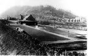
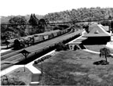
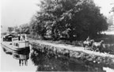

Historical |

14th Street Crossing Monaca Pa-1.jpg |

1950's wreck on the Pittsburgh & Lake Erie RR.jpg |

Aliquippa Station.jpg |
 AliquippaTrainStation.jpg |

Ambridge - Woodlawn Bridge.jpg |

Ambridge Pa Merchant St North from Fifth, looking toward Sixth. About 1924.jpg |

B.F. Jones Memorial Library Junior Circulation Area 1930.jpg |

Baltimore & Ohio Railroad S class 2-10-2 steam locomotive.jpg |
 BeaverP&LERRStationMay201949Troia.jpg |

Bridgewater Historic District.jpg |

Captain William Vicary House.jpg |

Carnegie Free Library, Beaver Falls, Pa.jpg |

Completion of steel work on the P&LE RR's Beaver Bridge.jpg |

Conrail caboose at the trail end of an eastbound P&LE train.jpg |

Coraopolis Armory.jpg |

Coraopolis, Pa. Station.jpg |

Downtown Beaver Pennsylvania.jpg |

Early 1950's wreck on the Pittsburgh & Lake Erie RR.jpg |

Eastbound P & LE Freight Train - Coraopolis, Pa.jpg |

Finlay P&LE wooden caboose.jpg |

Flag Park Rochester Pa.jpg |

Fort McIntosh, Beaver, Pa.jpg |

Freedom, Pa.jpg |

Historic Fallston Bridge.jpg |

Hot Metal Bridge.jpg |

J&L Specialty Steel Midland PA.jpg |

J&L steel mill in Aliqiuppa PA.jpg |

Legionville Monument, Harmony Township, Pa.jpg |

Matthew S. Quay House.jpg |

Merrick Art Gallery, New Brighton, Pa.jpg |

Merrill Lock 6, Industy, Pa.jpg |

Montgomery Dam Industry Pa.jpg |

Montour Railroad Diesels.jpg |

Montour Railroad SW-9 diesel No. 80.jpg |

Montour Railroad's Imperial, Pa. passenger station.jpg |

Moon Run Mine and railroad yard located in suburban Pittsburgh in Robinson Township.jpg |

New Brighton Beaver Falls Bridge.jpg |

Ohio_Canal-1.jpg |
 Ohio_Canal.jpg |

Old Economy Pa.jpg |

P & LE Bridge. Entering Pin at Main Pier.jpg |

P & LE Eastbound Train, Aliquippa Pa.jpg |

P & LE General Electric U-28-B No. 2818.jpg |

P&LE Aliquippa, Pa. Passenger Station.jpg |

P&LE Commuter Train Glenwillard Pa.jpg |

P&LE derailment at Glenwillard Pa.jpg |

P&LE derailment Glenwillard Pa.jpg |

P&LE main line passing the Rockwell Corporation's spring plant located in Moon Township.jpg |

P&LE Mikado steam locomotive No. 193 is being re-railed at Fallston, Pa.jpg |

P&LE Mikado.jpg |

P&LE's Aliquippa Yards.jpg |

P&LE's Freight House Monaca, Pa.jpg |

Pennsylvania Ave Bridge, Monaca Pa.jpg |

Pittsburgh & Lake Erie Main Line at Colona, just east of Monaca, Pa.jpg |

Pittsburgh & Lake Erie Railroad's Beaver Falls New Brighton passenger station.jpg |

Pittsburgh & Lake Erie's Beaver Passenger Station.jpg |

Rochester - Bridgewater Bridge.jpg |

Sandy & Beaver Canal Postcard.jpg |

Stoops Ferry, Pa. Passenger Station.jpg |

The bridge which was completed in May, 1910 was an engineering marvel and one of the largest cantilever bridges in the world.jpg |

The Pittsburgh & Lake Erie did not waste a lot of money in painting its Montour Railroad's second-hand former Union Pacific steel cabooses.jpg |

wreck on the Pennsylvania Railroad.jpg |